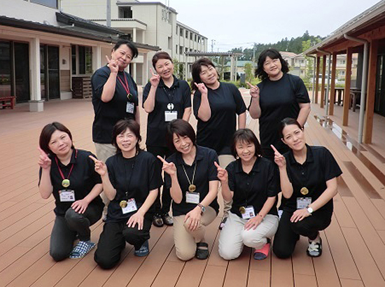
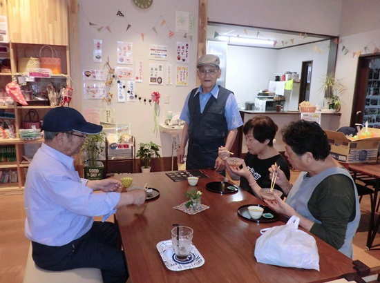

被災地のいま 宮城県・福島県の現状
被災地のいま ～宮城県南三陸町～
第72回 2019年8月5日 ―まち・住まい・コミュニティ―
「自分たちの町のために何かしなきゃ」
集う機会がもたらした地域力
宮城県南三陸町社会福祉協議会「結の里」
南三陸町「結（ゆい）の里」は、震災後、ボランティアの活動拠点となったベイサイドアリーナの向かいにあります。木造平屋の建物にデイサービス施設と地域交流スペースがあり、隣の災害公営住宅とはウッドデッキでつながっています。地域の人たちが一緒に昼食をつくったり、赤ちゃんを連れたお母さんたちが集まってお喋りしたり、介護サービスの拠点であると同時に、すべての世代が気軽に集うことのできる場所になっています。
結の里の特徴は、この“集う機会”が地域住民と社会福祉協議会（以下社協）のコラボレーションで幾通りも用意されていることです。
「この場所で何をしていくか。2018年4月の開所までの1年間、話し合いを重ねました。住民は、実行委員として施設運営に関わります。自分たちも運営を担う一人であることが分かるにつれて、色々なアイディアを提案してくるようになりました」と、髙橋吏佳さん（南三陸町社会福祉協議会結の里管理責任）は振り返ります。“行政や社協がやってくれる”のではなく、“自分たちはこうしたい、だから社協さん手伝って”と意識が変わってきたのだそうです。
そうして生まれたのが、月1回、みんなで料理をつくって一緒に食べる「みんな食堂」や住民がボランティアで運営する「えんがわカフェ」、映画鑑賞会や「走らないミニ運動会」などのイベントです。
2019年7月で開所から1年3ヶ月、“集う機会”はたくさんの笑顔をもたらすとともに、“地域力”を高めたと髙橋さんは言います。「例えばみんな食堂に来られない人のために宅配はどうだろうという意見が出たり、ワークショップや研修では思ったことをどんどん発言したり。自分たちの町のために何かしなきゃという思いが強くなりました」。
イベントを主催するのはそれぞれ実行委員のグループです。社協は予算の管理を手伝ったり、他の団体から申し込まれたイベントとの調整を図ったりします。
「住民も役割を持ち、楽しみながらやってほしい。震災から、みんなで家族のようにして生きてきたんだから、これからも楽しんでやっていこう」。常々そう話しているという髙橋さん。「だから結の里の事務所も、社協のオフィスというより住民の茶の間という感じ」と和やかに笑います。

▲南三陸町社会福祉協議会結の里の皆さん。前列中央が髙橋吏佳（りか）さん。ウッドデッキは災害公営住宅の入居者がいつでも来られるようにとフラットで開放的なつくりになっています。

▲「えんがわカフェ」。8：30～17：00の間、2時間程度、ボランティアが関わります。7月からは、住民が自分の都合のいい日時と名前をカレンダーに書き込んで運営する方式になりました。
2019年3月21日、みやぎ生協はコープふくしま・福島県南生協と組織合同しました。このコーナーのタイトルも「被災地のいま みやぎ生協・コープふくしまから宮城・福島のいまをお伝えします」に変え、福島県の現状についてもお伝えしていきます。
前の記事
第71回「―まち・住まい・コミュニティ― ついの住処、仮の住まい どの被災者にも地域で安心して生活できる環境を 福島県南相馬市社会福祉協議会」（2019年7月5日）